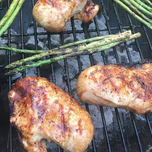

Pretty Chicken Marinade

Description
This is a great chicken marinade! Allow chicken to marinate for no longer than 4 hours, because the lemon juice will begin to cook the chicken.
When grilled, the chicken turns a beautiful caramel color, which makes great presentation. This is my fiance's favorite chicken.
Ingredients
- ⅔ cup olive oil
- ⅔ cup reduced-sodium soy sauce
- ¼ cup lemon juice
- 2 tablespoons liquid smoke flavoring
- 2 tablespoons spicy brown mustard
- 2 teaspoons ground black pepper
- 2 teaspoons garlic powder
- 4 skinless, boneless chicken breast halves
Steps
- In a large bowl, mix the olive oil, soy sauce, lemon juice, liquid smoke, mustard, pepper, and garlic powder. Place chicken in the bowl, and coat with the marinade. Cover, and allow chicken to marinate a maximum of 4 hours in the refrigerator.
- Preheat the grill for high heat.
- Oil grill grate. Discard marinade, and place chicken on grate. Cook 6 to 8 minutes on each side, until juices run clear.
Note
The nutrition data for this recipe includes information for the full amount of the marinade ingredients. Depending on marinating time, ingredients, cooking method, etc., the actual amount of the marinade consumed will vary.
Nutrition Facts
Per Serving: 549 calories; protein 27.5g; carbohydrates 7g; fat 46.1g; cholesterol 67.2mg; sodium 1573.9mg.